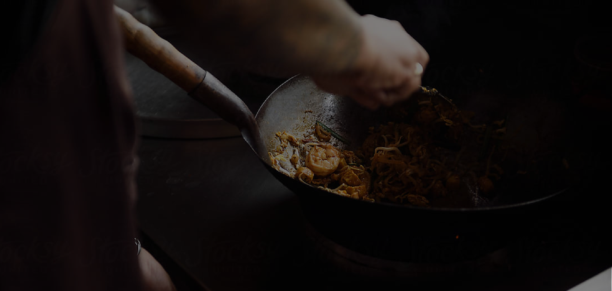
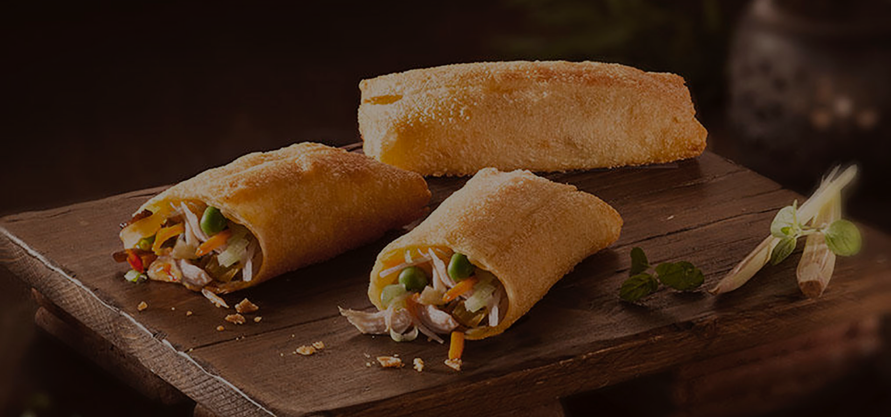
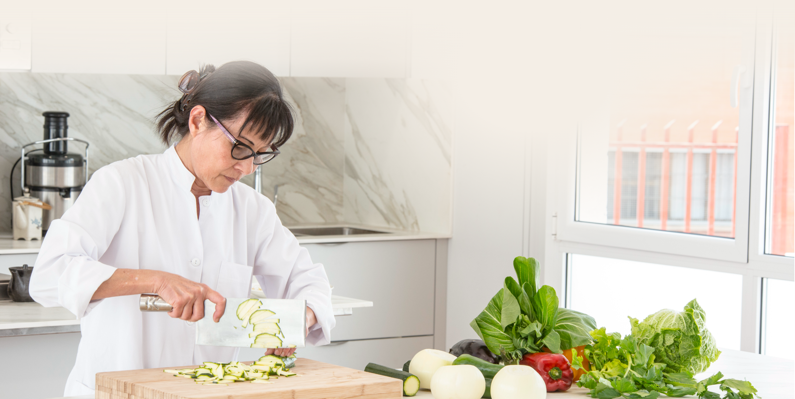
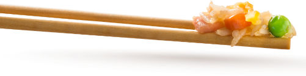

80
s
los orígenes
En 1980 nace Ta-Tung, un restaurante asiático que hoy día
todavía regenta la chef Kav Ly. Este negocio familiar se
encuentra en la calle Mare de Déu de la Salut, 75, en el
distrito de Gracia en Barcelona.

90
s
los orígenes
En 1980 nace Ta-Tung, un restaurante asiático que hoy día
todavía regenta la chef Kav Ly. Este negocio familiar se
encuentra en la calle Mare de Déu de la Salut, 75, en el
distrito de Gracia en Barcelona.

10
s
los orígenes
En 1980 nace Ta-Tung, un restaurante asiático que hoy día
todavía regenta la chef Kav Ly. Este negocio familiar se
encuentra en la calle Mare de Déu de la Salut, 75, en el
distrito de Gracia en Barcelona.
nuestra

DESARROLLO
premios

gran premio a la innovación 2018
gran premio a la innovación 2019
gran premio a la innovación 2020
En Ta-Tung, trabajamos día a día para ofrecerte
la mejor gastronomía asiática, apostando por la innovación y
la calidad. Prueba de ello son los premios y reconocimientos que
hemos recibido.
© Ta-Tung Platos Precocinados S.L.
Avda. de Torrelles de Llobregat s/n. Polígono industrial
“La Barruana” - 08620 Sant Vicenç dels Horts - Barcelona